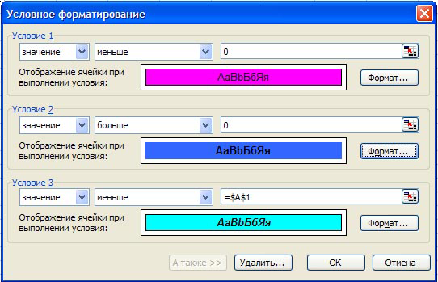
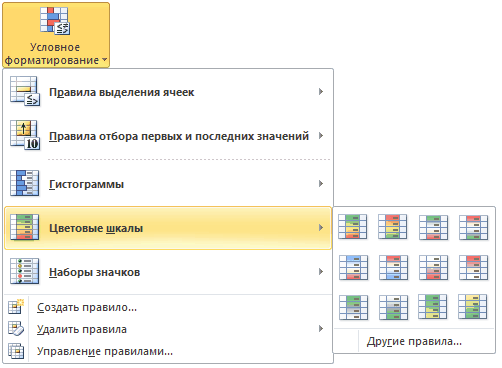
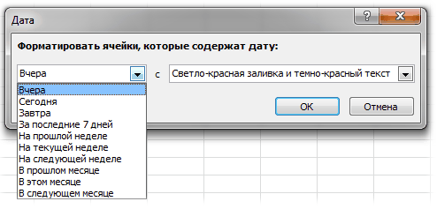
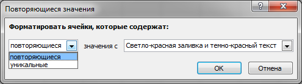
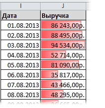
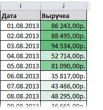
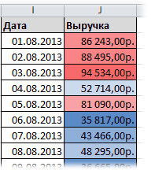
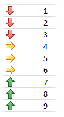
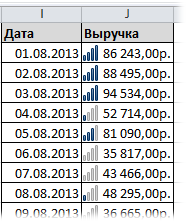

Отсутствует в Excel 2003
Основные понятия условного форматирования и как его создать
Условное форматирование - достаточно малоиспользуемый инструмент Excel. Но это как раз тот инструмент, при помощи которого можно изменить форматирование ячеек(цвет заливки, шрифт, границы) в зависимости от заданного условия, не прибегая к помощи Visual Basic for Applications.
Условное форматирование может значительно упростить выделение определенных ячеек или диапазона ячеек и визуализацию данных с помощью гистограммы, цветовых шкал и наборов значков. Оно изменяет внешний вид диапазона ячеек на основе указанного условия (или критерия). Если условие выполняется, то диапазон ячеек форматируется в соответствии с заданным для условия форматом; если условие не выполняется, то диапазон ячеек не форматируется.
Например, можно выделить ячейку с текущей датой; ячейку с числом, входящим в указанный диапазон; ячейка с определенным текстом и т.п.
Условное форматирование можно применить к диапазону ячеек, таблице или отчету сводной таблицы Excel.
Для чего может пригодиться Условное форматирование? Представим, что необходимо в большой таблице данных закрасить красным цветом все ячейки, значение в которых превышает 100. Что делается обычно в таких случаях? Верно. Устанавливается фильтр-Больше 100 и отфильтрованные строки закрашиваются. Но. Если значения этих ячеек формируются при помощи формул или просто изменяются по ходу работы с таблицей - довольно накладно будет каждый раз отыскивать значения больше 100. Установив же Условное форматирование выделять ничего не надо будет - ячейки будут окрашены красным автоматически, без Вашего участия.
Примечания:
В статье рассмотрим:
ГДЕ РАСПОЛОЖЕНО УСЛОВНОЕ ФОРМАТИРОВАНИЕ И КАК СОЗДАТЬ
Для создания условного форматирования необходимо:
В Excel 2003 условное форматирование довольно скучное (по сравнению с последующими версиями) и содержит лишь форматирование на основе значений и на основе формулы. Так же Excel 2003 не может содержать более трех условий для одной ячейки/диапазона. Поздние версии позволяют создавать куда более мощные визуальные эффекты для ячеек, сам функционал значительно расширен, а количество условий для одной ячейки/диапазона практически неограничено.
Т.к. основная часть условий достаточно информативна даже по названиям - я буду более подробно описывать только те условия, которые этого требуют.
Условное форматирование в Excel 2003:

Условное форматирование в Excel 2007-2010:

Главный недостаток предустановленных правил - их нельзя применять к ячейкам на основании значений других ячеек. Они применяются исключительно для тех ячеек, в которых сами значения. Например, нельзя сделать отображение гистограмм в диапазоне А1:А10, но значения для гистограмм брать из ячеек В1:В10.
Для Excel 2003 предустановленные правила ограничиваются списком, имеющемся в пункте значение(Cell Value Is), который в более поздних версиях называется Правила выделения ячеек:
Правила выделения ячеек (Highlight Cells Rules)
В Excel 2003 эти правила содержат условия:
Между, Вне, Равно, Не равно, Больше, Меньше, Больше или равно, Меньше или равно
between, not between, equal to, not equal to, greater than, less than, greater than or equal to, less than or equal to
В Excel 2007-2010: эти правила содержат условия:
Больше, Меньше, Между, Равно, Текст содержит, Дата, Повторяющиеся значения
Greater Than, Less Than, Between, Equal To, Text that Contains, A Date Occurring, Duplicate Values
Как видно, по большей части названия пунктов говорят за себя названиями, и не нуждаются в подробных описаниях их функционала. Чуть более подробно можно рассмотреть лишь Дата и Повторяющиеся значения из набора правил версий Excel 2007 и новее.
Дата:

Список содержит несколько значений: Вчера, Сегодня, Завтра, За последние 7 дней, На прошлой неделе, На текущей неделе, На следующей неделе, В прошлом месяце, В этом месяце, В следующем месяце
Yesterday, Today, Tomorrow, In the last 7 days, Last week, This week, Next week, Last month, This month, Next month
Соответственно, при выборе необходимого условия даты в указанном диапазоне, соответствующие условию, будут отформатированы.
Повторяющиеся значения:

Если в выпадающем списке выбрать повторяющиеся, то выделены будут все значения, которые встречаются в диапазоне более одного раза.
Если выбрать уникальные, то выделены будут все значения, которые встречаются только один раз.
Правила отбора первых и последних значений (Top/Bottom Rules)
Отсутствует в Excel 2003
Содержит условия:
Первые 10 элементов, Первые 10%, Последние 10 элементов, Последние 10%, Выше среднего, Ниже среднего
Top 10 Items, Top 10%, Bottom 10 Items, Bottom 10%, Above Average, Below Average
Гистограммы (Data Bars)
Отсутствует в Excel 2003
Сплошная заливка(Solid fill) и Градиентная заливка(Gradient fill). Отличаются между собой визуализацией бара. Лично мне визуально больше нравится градиентная. Для чего их можно применять: например, в столбце последовательно записаны данные по продажам за месяц и необходимо наглядно отобразить их разницу между собой.

Что важно знать при применении данных условий. Они работают только при применении к диапазону ячеек с числовыми данными. 100%-му заполнению шкалы соответствует максимальное значение среди выделенных ячеек, 1%-му заполнению - ячейка с минимальным значением. Т.е. ячейка с максимальным значением будет заполнена полностью, ячейка с минимальным - едва будет видна полоска бара, а остальные ячейки будут заполнены относительно процентного отношения данных в самой ячейке к показателям минимального и максимального значения всех ячеек. Например, если выделено 4 ячейки с числами: 1, 25, 50 и 100, то ячейка с 1 будет едва заполнена, ячейка с 25 - заполнена на четверть, ячейка с 50 - на половину, а ячейка с 100 - полностью.
Цветовые шкалы (Color Scales)
Отсутствует в Excel 2003
Работает по тому же принципу, что и Гистограммы(Data Bars): работает на основе числовых значений выделенных ячеек, но закрашивает не часть ячейки методом шкалы, а всю ячейку, но с различной интенсивностью или цветом. Можно создать условие, при котором ячейка с максимальной продажей будет закрашена самым насыщенным цветом, а минимальная - практически незаметно:

или добавить к этому еще различие по цветам:

В этом случае помимо насыщенности цвета значения будут различаться еще и самим цветом. Среди наборов шкал есть разбивка на два и на три цвета. При этом цвет назначается по принципу деления на кол-во цветов: первые 33% одним цветом, от 34% до 66% другим цветом, а оставшиеся - третьим. Если цвета два - то делится по 50%.
Наборы значков (Icon Sets)
Отсутствует в Excel 2003
Служит все для тех же целей, что и шкалы и гистограммы, но имеет менее гибкую систему отображения различий. Отражает различия между значениями ячеек по 2-х, 3-х, 4-х или 5-ти ступенчатой системе. Это значит, что если выбран набор из 3-х значков, то разница между минимальным и максимальным значением будет поделена на 3 и каждая третья часть будет со своим значком. Более наглядно можно увидеть, применив данное условие к числам от 1 до 9:

Для отражения разницы между значениями так же очень хорошо подходят значки в виде мини-гистограмм:

ИСПОЛЬЗОВАНИЕ ФОРМУЛЫ ДЛЯ ОПРЕДЕЛЕНИЯ ЯЧЕЕК ДЛЯ ФОРМАТИРОВАНИЯ
Формулы в качестве условий для условного форматирования как правило применяются в случаях, когда форматирование должно быть несколько сложнее, чем предусмотренные предустановленными условиями. Позволяет выделять различия между ячейками, минимальные и максимальные, да и вообще любые, которые можно выразить при помощи встроенных функций листа. А их не одна сотня, плюс всевозможные комбинации. Особенно ценно данное условие для Excel 2003 и ранних версий, т.к. предустановленных правил там почти нет. И формулы могут этот недостаток исправить.
Для создания подобного условия необходимо:
Если необходимо выделять форматированием не только конкретную ячейку, удовлетворяющую условию, а всю строку таблицы на основе ячейки одного столбца, то в пункте 1 выделяем не столбец, а всю таблицу, а ссылку на столбец с критерием закрепляем:
=$A1=МАКС($A$1:$A$20)
при выделенном диапазоне A1:F20(диапазон применения условного форматирования), будет выделена строка A7:F7, если в ячейке A7 будет максимальное число.
Так же можно применять не к конкретно одному столбцу, а к полностью диапазону. Но в этом случае надо знать принцип смещения ссылок в формулах, чтобы условия применялись именно к нужным ячейкам. Например, если задать условие для диапазона B1:D10 в виде формулы: =B1<A1, то цветом будут выделены ячейки столбца B, если значение ячейки столбца А в той же строке меньше(B1<A1, B3<A3). При этом если ячейки столбца D меньше ячеек столбца C в той же строке - они тоже будут выделены(D1<C1, D5<C5).
ПОИСК ЯЧЕЕК С УСЛОВНЫМ ФОРМАТИРОВАНИЕМ
Если к одной или нескольким ячейкам на листе применено условное форматирование, можно быстро найти их для копирования, изменения или удаления условного формата.
Поиск всех ячеек с условным форматированием
Поиск ячеек с одинаковым условным форматированием
РЕДАКТИРОВАНИЕ УСЛОВИЙ УСЛОВНОГО ФОРМАТИРОВАНИЯ
Excel 2003:
Excel 2007-2010:
УДАЛЕНИЕ УСЛОВНОГО ФОРМАТИРОВАНИЯ
Удаление условного форматирования со всего листа
Вкладка Главная(Home)(Home)- группа Стили(Styles)- Условное форматирование(Conditional formatting)- Удалить правила(Clear Rules)- Удалить правила со всего листа(Clear Rules from Entire Sheet).
Удаление условного форматирования из диапазона ячеек, таблицы или сводной таблицы
Excel 2003:
Excel 2007-2010:
Так же для Excel 2007-2010 можно удалить только определенное правило из указанных ячеек:
Так же см.:
Сборник формул для условного форматирования
Заменить условия УФ реальными
Удаление УФ из листа/книги
Надстройка замены Условного форматирования обычным